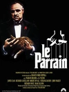

电影
图书
广播
小组
我们的精神角落
打开
极速下载
同时入选IMDB250和豆瓣电影250的电影
东方快车
同时入选IMDB250和豆瓣电影250的电影 2017年3月30日更新 感...
(展开)
651265
···

教父
马龙·白兰度/阿尔·帕西诺/詹姆斯·肯恩/美国/剧情/1972-03-15(纽约首映)
评语：同时进入IMDBtop100和豆瓣电影top100的电影：豆瓣电影250NO.17, IMDB250NO.2
教父
马龙·白兰度/阿尔·帕西诺/詹姆斯·肯恩/美国/剧情/1972-03-15(纽约首映)
评语：同时进入IMDBtop100和豆瓣电影top100的电影：豆瓣电影250NO.17, IMDB250NO.2
教父
马龙·白兰度/阿尔·帕西诺/詹姆斯·肯恩/美国/剧情/1972-03-15(纽约首映)
评语：同时进入IMDBtop100和豆瓣电影top100的电影：豆瓣电影250NO.17, IMDB250NO.2